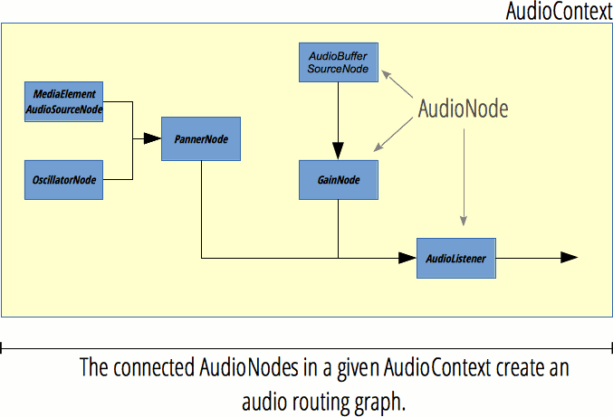

url: https://developer.mozilla.org/en-US/docs/Web/API/AudioContext
date: 2015-6-9
AudioContext
Properties
AudioContext.currentTime
描述：返回double秒，AudioContext一创建就从0开始走
作用：用于音频重放，比如source.start(time);中的time参数
AudioContext.destination
描述：返回AudioDestinationNode类型对象，表示AudioContext中的所有节点的最终节点，一般是音频输出设备，比如扬声器
作用：只有把一系列节点连接到AudioContext.destination才会发出声音
AudioContext.listener
描述：返回AudioListener对象
作用：【实现3D音频空间化（3D audio spatialization）】
AudioContext.mozAudioChannelType
描述：非标准，兼容性差，不建议使用
作用：
AudioContext.sampleRate
描述：返回浮点数，表示采样率
作用：同一个AudioContext中的所有节点采样率相同，所以不支持采样率转换
Methods
AudioContext.close()
描述：关闭AudioContext，强制释放所有音频资源
作用：关闭后无法创建节点，但可以解码音频、创建buffer
备注：https://developer.mozilla.org/en-US/docs/Web/API/AudioContext/close
AudioContext.createAnalyser()
描述：返回AnalyserNode对象
作用：【获取音频时间、频率、实现数据可视化（频谱图？）】
AudioContext.createBiquadFilter()
描述：返回BiquadFilterNode对象
作用：二阶滤波器，可以配置为常见类型的滤波器
AudioContext.createBuffer()
描述：返回空的AudioBuffer对象
作用：用来存放音频数据并通过AudioBufferSourceNode对象播放
AudioContext.createBufferSource()
描述：返回AudioBufferSourceNode对象
作用：用来播放AudioBuffer中的音频数据
AudioContext.createChannelMerger()
描述：返回ChannelMergerNode对象
作用：配合AudioContext.createChannelSplitter()来操作声道，把多个音频流的声道结整合到单一音频流
AudioContext.createChannelSplitter()
描述：返回ChannelSplitterNode对象
作用：用来【访问音频流中的各个声道并单独处理】，一般配合AudioContext.createChannelMerger()使用
AudioContext.createConvolver()
描述：返回ConvolverNode对象
作用：用来【给音频添加混响效果】
AudioContext.createDelay()
描述：返回DelayNode对象
作用：设置延迟，默认参数是0秒
AudioContext.createDynamicsCompressor()
描述：返回DynamicsCompressorNode对象
作用：用于压缩音频信号
AudioContext.createGain()
描述：返回GainNode对象
作用：用来【控制整体音量】
AudioContext.createJavaScriptNode()
描述：已废弃
作用：
AudioContext.createMediaElementSource()
描述：返回新的MediaElementAudioSourceNode对象
作用：从页面现有的audio或video元素获取数据
AudioContext.createMediaStreamDestination()
描述：返回与WebRTC MediaStream关联的MediaStreamAudioDestinationNode对象
作用：表示音频流，可以存放为本地文件或者发送给其他计算机
备注：Web RTC是网络实时通信，能实现浏览器间共享audio/video数据，现有原生API支持，不依赖于第三方插件，详情：https://developer.mozilla.org/en-US/docs/Web/Guide/API/WebRTC
AudioContext.createMediaStreamSource()
描述：返回新的MediaStreamAudioSourceNode对象
作用：需要一个MediaStream对象参数，比如navigator.getUserMedia实例
AudioContext.createOscillator()
描述：返回OscillatorNode对象
作用：表示周期波，主要用来【生成恒定的音调（恒音？）】
AudioContext.createPanner()
描述：返回PannerNode对象
作用：把输入的音频流空间化到三维空间
AudioContext.createPeriodicWave()
描述：创建PeriodicWave（周期波）
作用：用来定义周期波形，形成OscillatorNode的输出
AudioContext.createScriptProcessor()
描述：返回ScriptProcessorNode对象
作用：直接处理音频
AudioContext.createStereoPanner()
描述：返回StereoPannerNode对象
作用：实现【立体声效果】，把输入的音频流用等幂平移算法定位到立体图像
AudioContext.createWaveShaper()
描述：返回WaveShaperNode对象
作用：实现【非线性扭曲效果】
AudioContext.createWaveTable()
描述：已废弃
作用：
AudioContext.decodeAudioData()
描述：异步解码ArrayBuffer中的音频文件数据
作用：ArrayBuffer一般是XMLHttpRequest返回的response（发送时把responseType属性设置为arraybuffer返回arraybuffer型响应）
备注：取返回值是xhr.response而不是xhr.responseText
Related pages for Web Audio API
AnalyserNode
描述：分析节点
作用：提供实时频率和时域分析信息，只取数据，不改变输入
备注：时域分析是信号相关的术语，在时域内对信号进行滤波、放大、统计特征计算、相关性分析等处理，统称为信号的时域分析。
AudioBuffer
描述：音频缓存区
作用：可以通过AudioContext.decodeAudioData()或者AudioContext.createBuffer()创建，放进缓存区后可以通过 AudioBufferSourceNode播放
AudioBufferSourceNode
描述：音频缓存源节点
作用：把AudioBuffer中的数据转换为音频信号
备注：一个AudioBufferSourceNode只能播放一次，AudioBufferSourceNode.start()也只能调用一次。AudioBufferSourceNode不能复用（多次播放需要创建多个AudioBufferSourceNode），但AudioBuffer可以复用
AudioChannelManager
描述：非标准，目前只有FF支持，不建议使用
作用：
AudioDestinationNode
描述：音频目标（输出）节点
作用：表示AudioContext中所有节点的终点，一般是设备的扬声器
备注：输入的声道数量有限制，超过maxChannelCount会引发异常，应该是6
AudioListener
描述：音频倾听者，表示人的位置和方向
作用：用于音频空间化，AudioContext中所有PannerNode被空间化为AudioListener后都存放在AudioContext.listener属性里
AudioNode
描述：音频节点
作用：最高层抽象接口，继承关系查看图片rel.png
AudioParam
描述：音频参数
作用：表示一个与音频相关的参数，一般是AudioNode的参数，比如GainNode.gain
AudioProcessingEvent
描述：已过时，由Audio Workers代替
作用：
BiquadFilterNode
描述：双二次滤波器
作用：简单的低阶滤波器，可以用AudioContext.createBiquadFilter()创建
ChannelMergerNode
作用：声道合成器节点
描述：配合ChannelSplitterNode使用，把不同的单声道输入整合成单一输出
备注：多用来单独处理每一个声道，比如实现声道混合
ChannelSplitterNode
描述：声道分离器节点
作用：配合ChannelMergerNode使用，把音频源的各个声道分离成一组单声道输出
备注：同上
ConvolverNode
描述：卷积器节点
作用：实现线性卷积，常用来实现混响效果
备注：卷积混响能增强音频的空间感（厅堂感？），是一种复杂算法，可能存在比较大的开销
DelayNode
描述：延迟节点
作用：设置输入到输出的延迟
DynamicsCompressorNode
描述：动态压缩器节点
作用：实现压缩效果，防止削波失真，通过AudioContext.createDynamicsCompressor创建
备注：【常用于音乐制作和游戏音频】
GainNode
描述：增益节点
作用：用来调节音量，不会改变声道数
MediaStreamAudioDestinationNode
描述：媒体流音频目标（输出）节点
作用：表示包含单音频流媒体音轨（AudioMediaStreamTrack）WebRTC MediaStream的音频目标，可以通过Navigator.getUserMedia创建
MediaStreamAudioSourceNode
描述：媒体流音频源节点
作用：表示包含WebRTC MediaStream (比如网络摄影机和麦克风)的音频源，是一个类似于音频源的AudioNode
NotifyAudioAvailableEvent
描述：非标准，兼容性差，不建议使用
作用：
OfflineAudioCompletionEvent
描述：离线音频完成事件
作用：OfflineAudioContext处理结束时触发
OfflineAudioContext
描述：离线音频环境
作用：表示把所有AudioNode联系在一起的音频处理图
备注：OfflineAudioContext不渲染设备硬件，只是尽快完成处理并输出到AudioBuffer
OscillatorNode
描述：振荡器节点
作用：表示周期波形，比如正弦波，创建一个给定频率的正弦波，音调恒定
PannerNode
描述：声像节点
作用：表示空间中音频信号源的位置和行为
备注：用右手笛卡尔坐标系描述位置，用速度向量和方向锥表示运动，Pan表示声像，Phase表示相位，声像是指乐器在声场中的发声位置点。简单的说，就是声音的方位，是靠左还是靠右。
ParentNode
描述：父节点
作用：特殊的Node，可以有孩子
备注：ParentNode是抽象DOM节点，无法创建，Element、Document和DocumentFragment对象都实现了它
PeriodicWave
描述：周期波
作用：定义周期性波形，可以用于形成OscillatorNode的输出
ScriptProcessorNode
描述：脚本处理器节点
作用：实现用js生成处理分析音频，包含2个Buffer：InputBuffer和OutputBuffer
StereoPannerNode
描述：立体声声像节点
作用：把音频流向左或者向右平移，用低代价等阶算法把音频流放进立体声图
WaveShaperNode
描述：波形控制器节点
作用：非线性畸变放大器，除了实现明显的放大效果外还经常用来给信号添加一种暖调